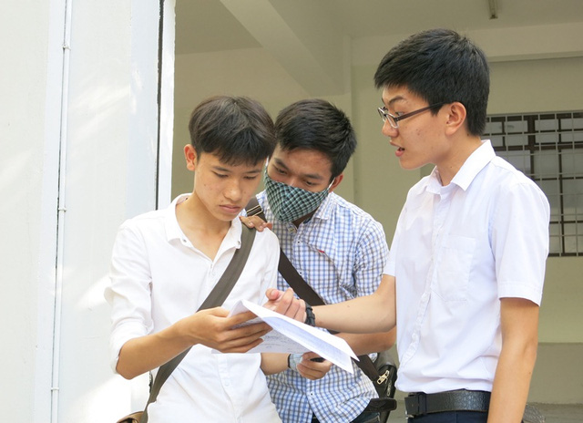

Bộ GD&ĐT giải đáp nóng về đăng ký dự thi THPT quốc gia 2017

Lần cập nhật cuối lúc Thứ sáu, 07 Tháng 4 2017 09:44 Viết bởi Administrator Thứ sáu, 07 Tháng 4 2017 09:34
Những lưu ý quan trọng trong đăng ký dự thi? Để xét công nhận tốt nghiệp, thí sinh có cần đăng ký thi môn ngoại ngữ hay không? Việc sử dụng kết quả thi để xét tuyển sẽ được thực hiện như thế nào? Quy định khai phần chứng minh nhân dân?

Đó là những vấn đề mà Bộ GD&ĐT sẽ giải đáp với các thí sinh sau đây:
6 lỗi cần tránh khi ĐKDT
Hỏi: Năm nay, thi THPT quốc gia có một số điểm mới. Để đăng ký dự thi và xét tuyển không gặp những sai sót đáng tiếc, thí sinh cần phải chú ý những điểm gì?
Trả lời: Năm nay, khi đăng ký dự thi, thí sinh phải điền thông tin vào phiếu đăng ký dự thi và đăng ký xét tuyển vào đại học hoặc vào các ngành đào tạo giáo viên của các trường cao đẳng. Việc đăng ký xét tuyển vào các trường cao đẳng khác thí sinh thực hiện theo hướng dẫn của Bộ Lao động - Thương binh và Xã hội.
Thông tin cần điền trong phiếu đăng ký dự thi không khác nhiều so với năm 2015, 2016. Tuy nhiên, thí sinh cần lưu ý một số điểm mới và những điểm mà thí sinh các năm trước thường mắc lỗi:
- Thí sinh đang học lớp 12 phải đăng ký thi đủ các môn thành phần của bài thi tổ hợp; chỉ có thí sinh tự do đã tốt nghiệp hoặc thí sinh được bảo lưu điểm thi theo quy định của Quy chế mới được chọn các môn thi thành phần của bài thi tổ hợp;
- Thí sinh giáo dục thường xuyên không phải thi môn ngoại ngữ để xét tốt nghiệp, tuy nhiên vẫn có thể đăng ký dự thi môn ngoại ngữ để sử dụng kết quả trong xét tuyển vào các trường;
- Thí sinh có chứng chỉ ngoại ngữ quốc tế còn hiệu lực theo quy định, để được miễn thi (đạt điểm tối đa) môn ngoại ngữ khi xét tốt nghiệp, cần phải điền đầy đủ thông tin trong mục 15 của Phiếu đăng ký dự thi. Tuy nhiên các thí sinh cần lưu ý: để có thể đăng ký xét tuyển vào các tổ hợp xét tuyển sử dụng kết quả môn ngoại ngữ, các thí sinh cần xem đề án tuyển sinh của trường dự định đăng ký xét tuyển. Nếu trường không thực hiện chính sách xét tuyển môn ngoại ngữ với chứng chỉ quốc tế thì thí sinh phải đăng ký dự thi môn ngoại ngữ để đăng ký xét tuyền đại học, cao đẳng (đồng thời đăng ký miễn thi môn ngoại ngữ để xét tốt nghiệp);
- Thí sinh có đăng ký sơ tuyển (vào các trường khối công an, quân đội, năng khiếu), cần sử dụng thống nhất số chứng minh nhân dân khi đăng ký dự thi và đăng ký sơ tuyển.
Khi điền thông tin đăng ký xét tuyển các thí sinh cần lưu ý:
- Điền chính xác thông tin vê ưu tiên trong tuyển sinh, thông tin về mã trường, mã ngành và mã tổ hợp để xét tuyển phải phù hợp với môn thi đã đăng ký.
- Khi lựa chọn trường, ngành cần cân nhắc kỹ lượng trên cơ sở nghiên cứu các quy định trong Quy chế tuyển sinh.
Quy định quan trọng bảo lưu đối với thí sinh tự do
Hỏi: Trong quy chế thi THPT quốc gia và xét tốt nghiệp THPT, Bộ Giáo dục và Đào tạo có quy định với thí sinh tự do đã tốt nghiệp, có thể đăng ký tại bất cứ đâu và dự thi tại bất cứ địa phương nào phù hợp. Tuy nhiên, với đối tượng là thí sinh tự do thi để xét tốt nghiệp (do năm 2016 chưa đỗ tốt nghiệp), Bộ Giáo dục và Đào tạo có lưu ý gì?
Trả lời: Đối với đối tượng thí sinh tự do chưa đỗ tốt nghiệp THPT đăng ký dự thi tại các trường THPT hoặc Trung tâm Giáo dục thường xuyên (đối với thí sinh Giáo dục thường xuyên). Đăng ký dự thi ở điểm đăng ký dự thi nào thì phải dự thi cùng với các thí sinh lớp 12 của điểm đăng ký dự thi đó.
Những thí sinh này được quyền bảo lưu kết quả thi năm 2016 để xét tốt nghiệp theo quy định của quy chế thi THPT quốc gia và được chọn các môn thành phần của bài thi tổ hợp để xét tốt nghiệp (ví dụ: thí sinh được bảo lưu môn Vật lí sẽ chỉ cần đăng ký thi môn Hóa học, Sinh học để xét tốt nghiệp).
Tuy nhiên, nhiều trường đại học không sử dụng kết quả thi được bảo lưu từ năm 2016 để xét tuyển nên thí sinh cần nghiên cứu đề án tuyển sinh của trường dự kiến đăng ký xét tuyển để đăng ký dự thi cho phù hợp.
Một điểm quan trọng mà thí sinh tự do chưa tốt nghiệp cần phải lưu ý: khác với thí sinh đang học lớp 12, việc đăng ký xét công nhận tốt nghiệp được thực hiện vào cuối tháng 5, thí sinh tự do nộp Phiếu đăng ký xét công nhận tốt nghiệp cùng với Phiếu đăng ký dự thi.
Hỏi: Theo Quy chế thi THPT quốc gia, thí sinh tự do thi để xét công nhận tốt nghiệp học theo chương trình nào phải đăng ký dự thi theo quy định của chương trình đó. Năm 2016 thí sinh dự thi nhưng chưa đỗ tốt nghiệp, thí sinh tiếp tục theo học tại Trung tâm giáo dục thường xuyên. Để xét công nhận tốt nghiệp, thí sinh có cần đăng ký thi môn ngoại ngữ hay không?
Trả lời: Việc xác định thí sinh học theo chương trình nào phải căn cứ vào học bạ. Nếu trong học bạ của thí sinh (ít nhất là lớp 12) có kết quả học tập do Trung tâm giáo dục thường xuyên cấp thì thí sinh được phép đăng ký dự thi theo quy định đối với thí sinh giáo dục thường xuyên và không phải đăng ký dự thi môn ngoại ngữ.
Hỏi: Thí sinh tự do chưa tốt nghiệp được bảo lưu tối đa là bao nhiêu môn? Năm 2016, thí sinh có điểm khuyến khích là do có giấy chứng nhận nghề. Năm nay thí sinh có thể tiếp tục sử dụng giấy chứng nhận nghề để được hưởng chế độ khuyến khích hay không?
Trả lời: Về điểm bảo lưu, nếu năm 2016 thí sinh thi đủ số môn, không bị kỷ luật ở mức hủy kết quả thi thì những môn thi có kết quả từ 5 điểm trở lên, thí sinh được bảo lưu và dùng kết quả bảo lưu để xét công nhận tốt nghiệp.
Về điểm khuyến khích, nếu năm 2016 thí sinh có chứng chỉ nghề theo đúng quy định và đã được hưởng điểm khuyến khích thì thí sinh vẫn được hưởng điểm khuyến khích đó để xét công nhận tốt nghiệp năm 2017.
Hỏi: Với bài thi tổ hợp Khoa học Tự nhiên, Khoa học Xã hội, các thí sinh tự do đã tốt nghiệp, thí sinh hệ giáo dục thường xuyên sẽ phải lựa chọn môn thi như thế nào, việc xếp phòng thi ra sao?
Trả lời: Để được xét công nhận tốt nghiệp, thí sinh là học viên lớp 12 Giáo dục thường xuyên năm học 2016 - 2017 phải đăng ký dự thi 3 bài thi: Toán, Ngữ văn và chọn 1 trong 2 bài thi tổ hợp (thí sinh cũng có thể đăng ký cả 2 bài thi tổ hợp và sử dụng bài thi có kết quả cao hơn để xét tốt nghiệp). Lưu ý: Bài thi tổ hợp Khoa học Xã hội đối với thí sinh Giáo dục thường xuyên chỉ có 2 môn thi thành phần là Lịch sử và Địa lí.
Thí sinh tự do đã tốt nghiệp chỉ đăng ký các môn thi phù hợp với yêu cầu xét tuyển của các ngành mà thí sinh sẽ đăng ký xét tuyển đại học, cao đẳng. Các thí sinh này có thể chọn thi các môn thành phần của bài thi tổ hợp và được xếp vào các phòng thi riêng tại điểm thi theo môn thi mà thí sinh đó đăng ký. Thí sinh Giáo dục thường xuyên cũng được xếp vào các phòng thi riêng tại điểm thi khi dự thi bài tổ hợp Khoa học Xã hội.
Điểm bài tổ hợp nào cao sẽ được xét tốt nghiệp
Hỏi: Để có kết quả xét công nhận tốt nghiệp THPT và xét tuyển vào các trường đại học, co đẳng thí sinh đã đăng ký thi cả hai bài thi tổ hợp. Nếu có một bài thành phần trong bài thi tổ hợp có kết quả dưới 1,0 điểm, thí sinh có được xét công nhận tốt nghiệp không? Việc sử dụng kết quả thi để xét tuyển sẽ được thực hiện như thế nào?
Trả lời: Quy chế thi THPT quốc gia và xét công nhận tốt nghiệp THPT quy định: Để xét công nhận tốt nghiệp THPT, thí sinh phải thi 3 bài thi bắt buộc là Toán, Ngữ văn, Ngoại ngữ và tự chọn 1 trong số 2 bài thi tổ hợp Khoa học Tự nhiên, Khoa học Xã hội.
Quy chế cũng qui định thí sinh có thể đăng ký dự thi cả hai bài thi tổ hợp Khoa học Tự nhiên và Khoa học Xã hội. Trong trường này điểm bài thi nào cao hơn sẽ được tính để xét công nhận tốt nghiệp THPT.
Tuy nhiên, thí sinh cần lưu ý: đã đăng ký dự thi bài thi tổ hợp nào thì phải dự thi hết các môn thành phần của bài thi tổ hợp đó, kể cả trường hợp đăng ký dự thi cả 2 bài thi tổ hợp.
Nếu thí sinh đăng ký dự thi cả 2 bài thi tổ hợp mà không dự thi 1 bài sẽ bị coi là bỏ thi bài thi đã đăng ký để xét tốt nghiệp và vì vậy thí sinh sẽ không được xét công nhận tốt nghiệp.
Khi thí sinh có kết quả của cả hai bài thi tổ hợp, hệ thống sẽ tự xác định bài tổ hợp nào không có môn thi thành phần bị điểm “liệt” (điểm từ 1,0 trở xuống) để xét công nhận tốt nghiệp cho thí sinh.
Trường hợp cả hai bài thi tổ hợp đều không có môn thành phần bị điểm “liệt”, hệ thống sẽ chọn bài thi có kết quả cao hơn để xét công nhận tốt nghiệp. Như vậy, trong 2 bài thi tổ hợp chỉ cần 1 bài không có môn thành phần bị điểm “liệt” là thí sinh được xét công nhận tốt nghiệp.
Đối với bài thi có môn thành phần bị điểm “liệt”, nếu đã tốt nghiệp, thí sinh không thể dùng kết quả cả bài thi đó để xét tuyển đại học, cao đẳng, nhưng vẫn có thể dùng kết quả của các môn thành phần có kết quả trên 1,0 điểm để đăng ký xét tuyển đại học, cao đẳng.
Cách ghi phần ưu tiên trong phiếu ĐKDT
Hỏi: Có những quy định gì cho phần khai số Chứng minh nhân dân/Thẻ căn cước công dân, vì hiện nay vẫn có cả Chứng minh nhân dân mẫu cũ (9 số), Chứng minh nhân dân mẫu mới hoặc Thẻ căn cước công dân (12 số)?
Trả lời: Mục 4 trong Phiếu đăng ký dự thi dành 12 ô để điền số Chứng minh nhân dân hoặc Thẻ căn cước công dân. Trường hợp Thẻ căn cước công dân hoặc Chứng minh nhân dân có 12 số, các em điền bình thường; trường hợp Chứng minh nhân dân chỉ có 9 số, các em điền vào 9 ô bên phải và để trống 3 ô bên trái.
Hỏi: Với những đối tượng ưu tiên, cần điền thông tin vào Phiếu đăng ký dự thi ra sao?
Trả lời: Chế độ ưu tiên trong xét công nhận tốt nghiệp THPT bao gồm:
- Diện ưu tiên: Diện 1 là những thí sinh bình thường, không được cộng điểm ưu tiên; thí sinh Diện 2 được cộng 0,25 điểm,và Diện 3 được cộng 0,5 điểm.
- Điểm khuyến khích được cộng cho thí sinh có các chứng chỉ ngoại ngữ, tin học (đối với thí sinh giáo dục thường xuyên) và chứng chỉ nghề, đoạt giải cá nhân, tập thể trong các kỳ thi quốc tế, thi chọn học sinh giỏi cấp quốc gia, cấp tỉnh.
Điều 36, Quy chế thi THPT quốc gia và xét công nhận tốt nghiệp THPT quy định chi tiết về diện ưu tiên và mức cộng điểm khuyến khích. Khi đăng ký xét công nhận tốt nghiệp, thí sinh cần điền thông tin về chế độ ưu tiên (diện ưu tiên và điểm khuyến khích) ở mục 11 và 12 trong Phiếu đăng ký xét công nhận tốt nghiệp THPT.
- Chế độ ưu tiên trong xét tuyển gồm ưu tiên theo khu vực và ưu tiên theo đối tượng được quy định cụ thể tại Điều 7 Quy chế tuyển sinh đại học hệ chinh quy, tuyển sinh cao đẳng nhóm ngành đào tạo giáo viên hệ chính quy.
Khi đăng ký dự thi, thí sinh điền thông tin về chế độ ưu tiên trong xét tuyển vào mục 17 và mục 18 trong Phiếu đăng ký dự thi THPT quốc gia và xét tuyển vào đại học, cao đẳng.
Hồng Hạnh (dantri.com.vn)
- 13/07/2017 08:44 - Bộ Giáo dục giải đáp hàng loạt câu hỏi nóng trong …
- 12/07/2017 13:30 - Những lưu ý khi điều chỉnh nguyện vọng
- 10/07/2017 13:55 - Thể lệ trao thưởng Quỹ ươm mầm tài năng đất Quảng …
- 08/07/2017 16:10 - Những điểm 10 đặc biệt
- 15/05/2017 08:18 - Bộ đề thi tham khảo kỳ thi Trung học phổ thông Quố…
- itnbk.edu.vn
- 04/04/2017 09:54 - 4 điểm khác biệt thú vị giữa tiếng Anh Anh và tiến…
- 01/04/2017 09:30 - Cổng thông tin tuyển sinh của Bộ Giáo dục và Đào t…
- 30/03/2017 08:23 - Thủ tướng chỉ thị bảo đảm kỳ thi THPT, tuyển sinh …
- 09/03/2017 00:00 - Trường Chuyên Nguyễn Bỉnh Khiêm là chiếc nôi …
- 05/10/2016 10:44 - Thi trắc nghiệm môn Toán xác suất đỗ ăn may ngang …